Competitive programming
Created by Herinson Rodrigues
Conteúdo
- Introdução
- Anatomia de um problema
- Rotinas de I/O
- Onde treinar
Introdução
Fato: "ACM-ICPC é uma competição de programação disputada"
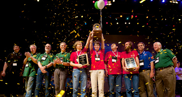O que veremos pela frente?
"Dado um conjunto de problemas bastante conhecidos em Ciência da Computação, seu trabalho é resolvê-los o mais rápido que você puder!"

Como assim?
- Os problemas já estão resolvidos
- Pelo menos os problem setters já resolveram os problemas
Anatomia de um problema
O problema
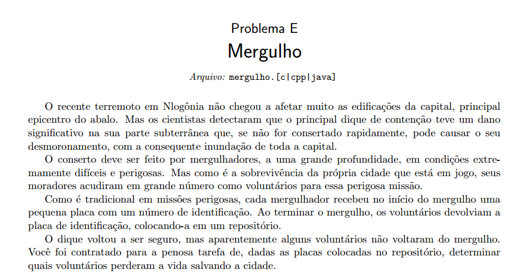Bullshit!
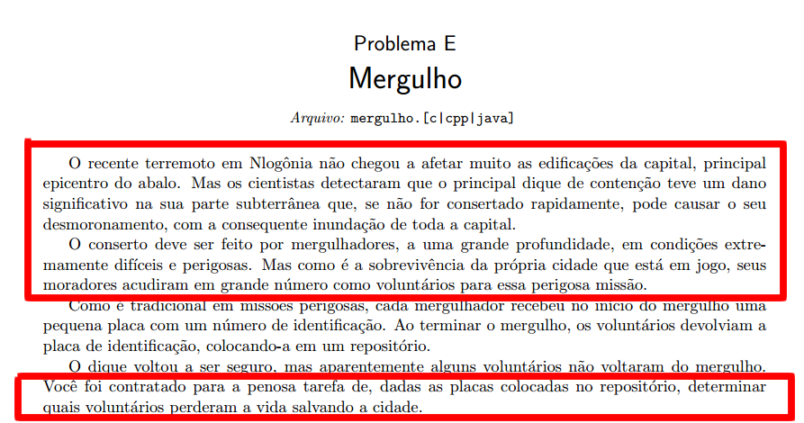Informações relevantes!
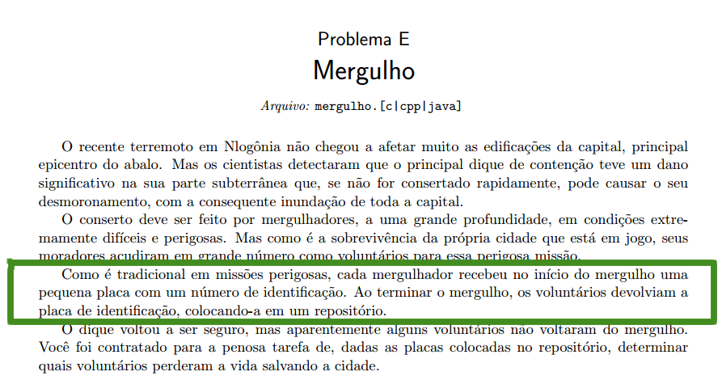Entrada e saída
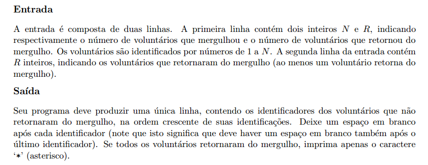Restrições e exemplo de I/O
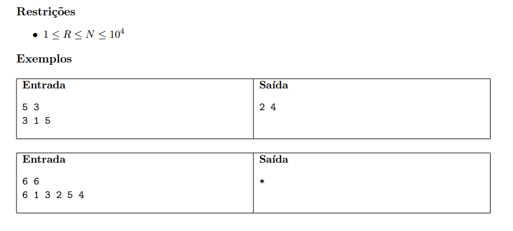O que isso significa?
- Seu programa deve produzir a mesma saída que o problem setter produziu utilizando uma entrada secreta
- Seu programa deve resolver o problema dentre um limite de tempo
Rotinas de I/O
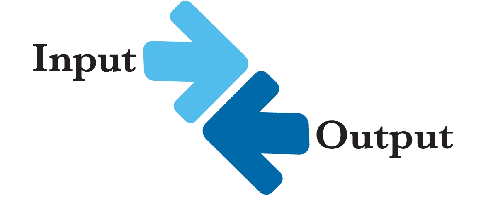1) O número de casos de testes é dado na primeira linha da entrada
int TC, a, b;
scanf("%d", &TC);
while (TC--) {
scanf("%d %d", &a, &b);
printf("%d\n", a + b);
}
Exemplo
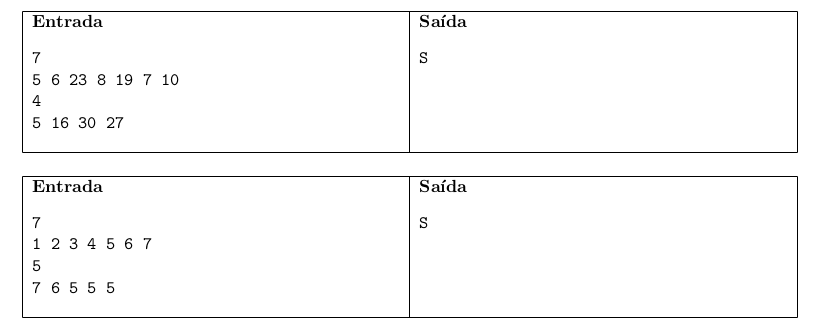2) Múltiplos casos de testes terminam com um valor especial de entrada (geralmente zeros)
int a, b;
while (scanf("%d %d", &a, &b), (a || b))
printf("%d\n", a + b);
Exemplo 2
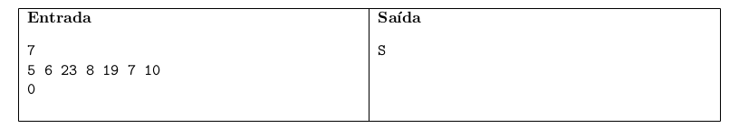3) Múltiplos casos de testes terminam com EOF (fim de arquivo)
int a, b;
while (scanf("%d %d", &a, &b) == 2)
printf("%d\n", a + b);
int a, b;
while (scanf("%d %d", &a, &b) != EOF)
printf("%d\n", a + b);
Exemplos 3
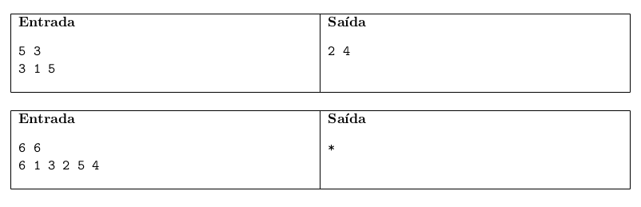Onde treinar

Onde treinar

Referências
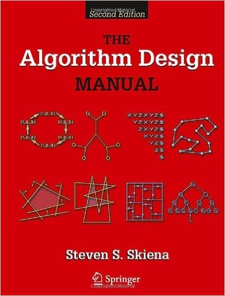"The Algorithm Design Manual", Steven Skiena
Referências
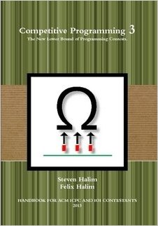"Competitive Programming 3", Steve Halim e Felix Halim
Referências
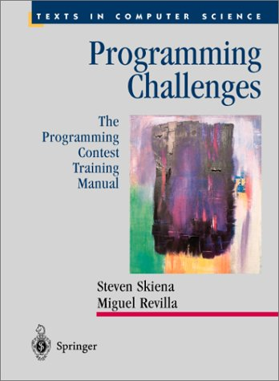"Programming Challenges", Steven Skiena e Miguel Revilla